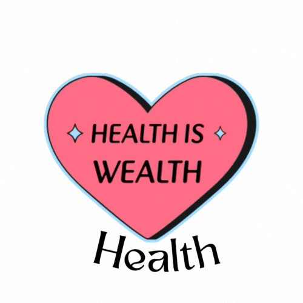
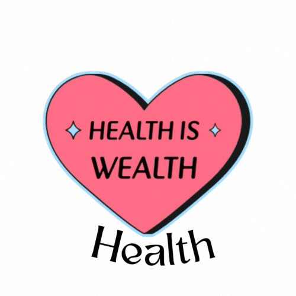

"Environment Theory"
As a nurse, Florence Nightingale spent the majority of her life serving people in
the nineteenth century. Nightingale proved throughout her life that altering a person's
surroundings can promote health in addition to medicine saving lives.
It has never been thoroughly studied previously how a patient's surroundings are in a medical setting.
Nightingale was a nurse who worked in British hospitals and kept track of hospital mortality
when the Crimean War broke out in 1854. She started implementing evidence-based practice
to make changes to the surroundings that would encourage a healthier atmosphere.
Among the improvements she made were cleaner surroundings, better meals, and water for the hospital.
She found that she could significantly improve health
after only a year of altering her surroundings (McDonald, 2014).

Naturally, the most important consideration in patient care is health.
According to Nightingale's concept, nurses may significantly enhance a person's health by providing care,
keeping a clean environment, being prepared, and attending to other medical needs.
Her idea is grounded in the 19th century, and it is encouraging that she was able to
understand the significance of certain fundamental medical necessities in her day,
such as food and clean water (Stichler, 2014).
She effectively established the metaparadigm of modern nursing on environment.
Essentially of the surroundings in promoting patient health in the healthcare industry.
Set by Florence Nightingale, the
criterion that is still applied to the nursing profession today. Not much existed in the early 19th century.
Before there was no importance given to elimination of microorganisms and the spread and acquisition of infections.
But due to her initiative, physicians and nurses in Nightingale's day were more concerned with treating illnesses.
Resulting to the growth in the number of people in the medical field, that we're concentrating on
aseptic procedures or cleaning strategies, such as bleaching and limiting the growth of germs.

Nightingale concentrated on the surroundings for the person or individual, even if her philosophy was based on the environment.
Medically speaking, you wouldn't require an environment if the individual wasn't there.
"Nightingale's environmental theory can be viewed as a systems model that focuses on the client in the center,
surrounded by aspects of the environment all in balance" (Zborowsky, 2014).
In this sense, her theory's main focus is on helping the patient's body, mind, and spirit.
Nightingale was able to identify what made people peaceful, what made them more nervous,
and what made them agitated through assessments and observations.
In the 1800s, nursing was not regarded as a respectable profession.
People thought that in a month or two, nurses could learn everything they needed to know.
Throughout her career, Nightingale demonstrated that nursing is about more than just carrying out medical orders;
it's also about advancing health (Arnone and Vitzsimons, 2015).
Developing critical thinking skills for patients was a major game-changer for the nursing profession.
Instead than focusing only on the symptoms that the doctor may believe to be the patient's cause of illness,
nurses began to consider the patient's general health.
According to Nightingale, being a nurse is a calling to support patients' physical and mental well-being
rather than just a job title or career (Stichler, 2014).
the nineteenth century. Nightingale proved throughout her life that altering a person's
surroundings can promote health in addition to medicine saving lives.
It has never been thoroughly studied previously how a patient's surroundings are in a medical setting. Nightingale was a nurse who worked in British hospitals and kept track of hospital mortality
when the Crimean War broke out in 1854. She started implementing evidence-based practice
to make changes to the surroundings that would encourage a healthier atmosphere.
Among the improvements she made were cleaner surroundings, better meals, and water for the hospital.
She found that she could significantly improve health
after only a year of altering her surroundings (McDonald, 2014).

Naturally, the most important consideration in patient care is health.
According to Nightingale's concept, nurses may significantly enhance a person's health by providing care,
keeping a clean environment, being prepared, and attending to other medical needs.
Her idea is grounded in the 19th century, and it is encouraging that she was able to
understand the significance of certain fundamental medical necessities in her day,
such as food and clean water (Stichler, 2014).
She effectively established the metaparadigm of modern nursing on environment.
Essentially of the surroundings in promoting patient health in the healthcare industry.
Set by Florence Nightingale, the criterion that is still applied to the nursing profession today. Not much existed in the early 19th century.
Before there was no importance given to elimination of microorganisms and the spread and acquisition of infections.
But due to her initiative, physicians and nurses in Nightingale's day were more concerned with treating illnesses.
Resulting to the growth in the number of people in the medical field, that we're concentrating on
aseptic procedures or cleaning strategies, such as bleaching and limiting the growth of germs.
Nightingale concentrated on the surroundings for the person or individual, even if her philosophy was based on the environment.
Medically speaking, you wouldn't require an environment if the individual wasn't there.
"Nightingale's environmental theory can be viewed as a systems model that focuses on the client in the center,
surrounded by aspects of the environment all in balance" (Zborowsky, 2014).
In this sense, her theory's main focus is on helping the patient's body, mind, and spirit.
Nightingale was able to identify what made people peaceful, what made them more nervous,
and what made them agitated through assessments and observations.
In the 1800s, nursing was not regarded as a respectable profession.
People thought that in a month or two, nurses could learn everything they needed to know.
Throughout her career, Nightingale demonstrated that nursing is about more than just carrying out medical orders;
it's also about advancing health (Arnone and Vitzsimons, 2015).
Developing critical thinking skills for patients was a major game-changer for the nursing profession.
Instead than focusing only on the symptoms that the doctor may believe to be the patient's cause of illness,
nurses began to consider the patient's general health.
According to Nightingale, being a nurse is a calling to support patients' physical and mental well-being
rather than just a job title or career (Stichler, 2014).